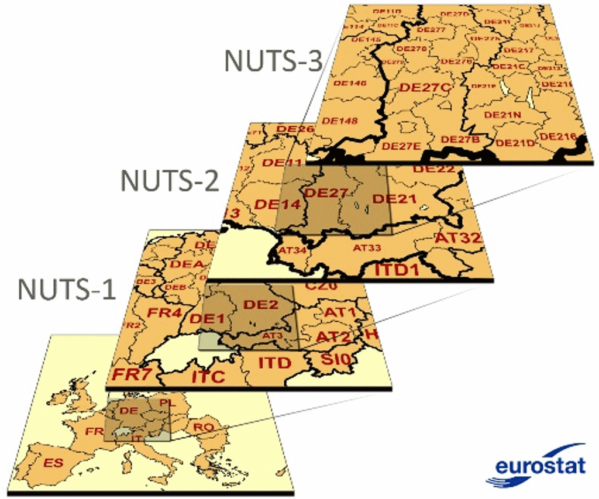
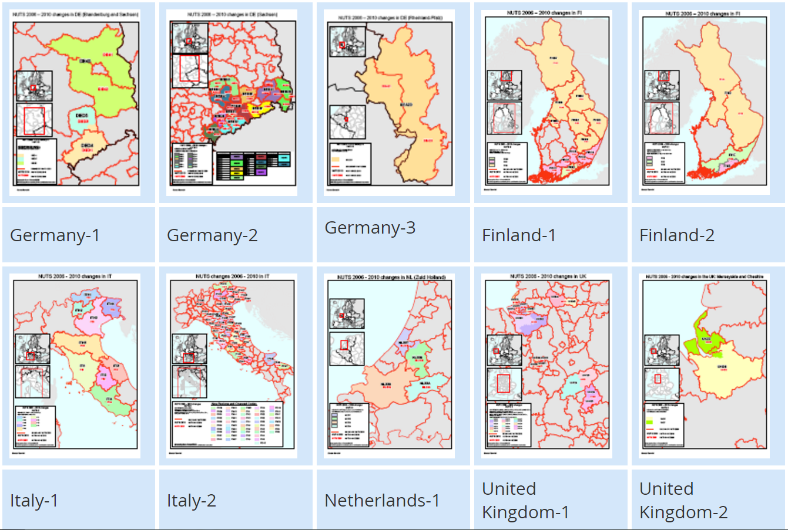
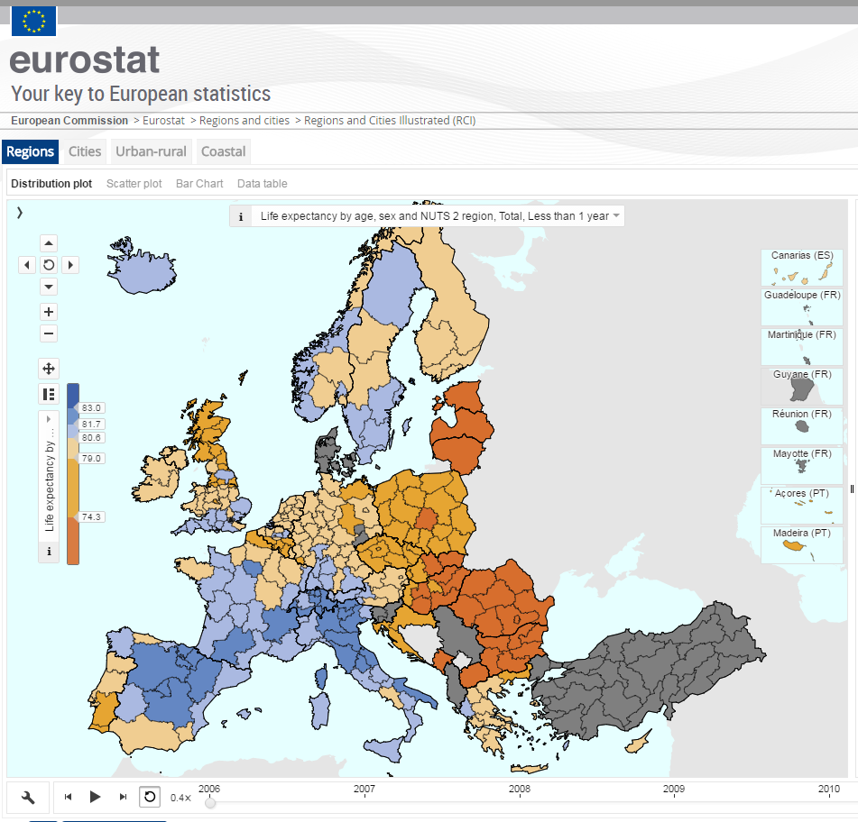
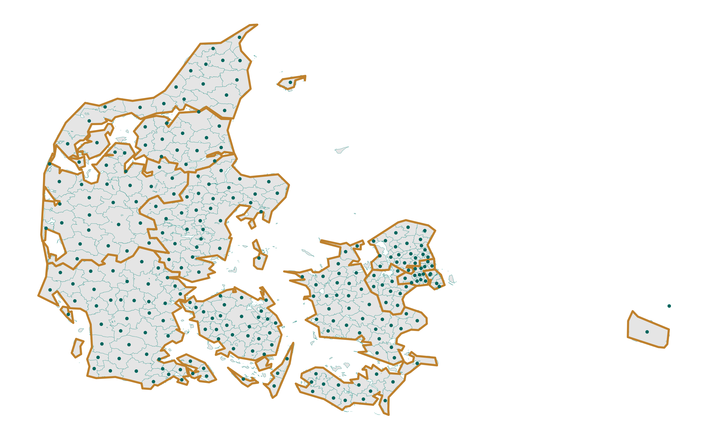
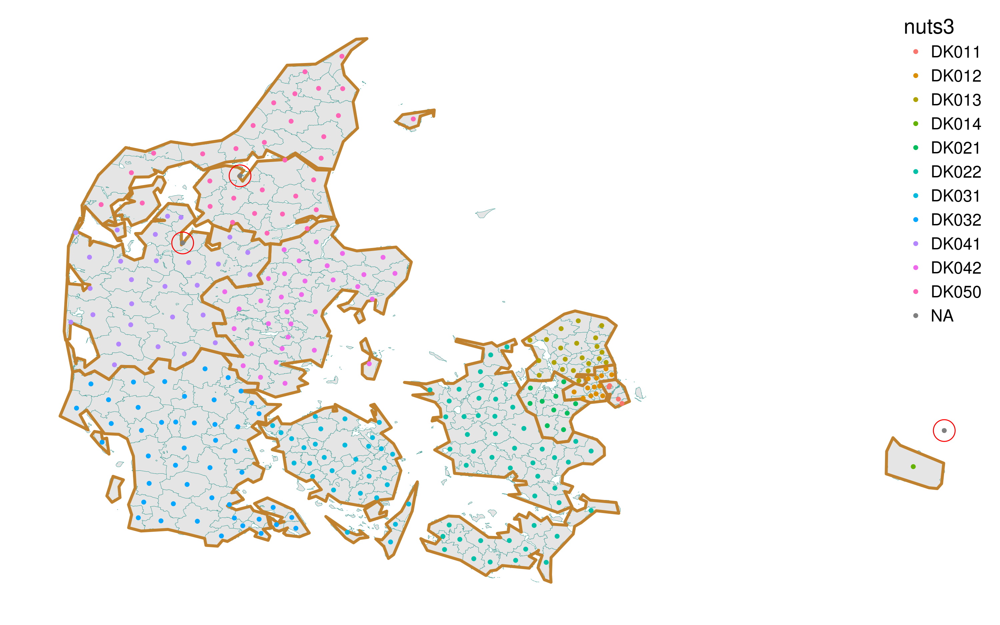
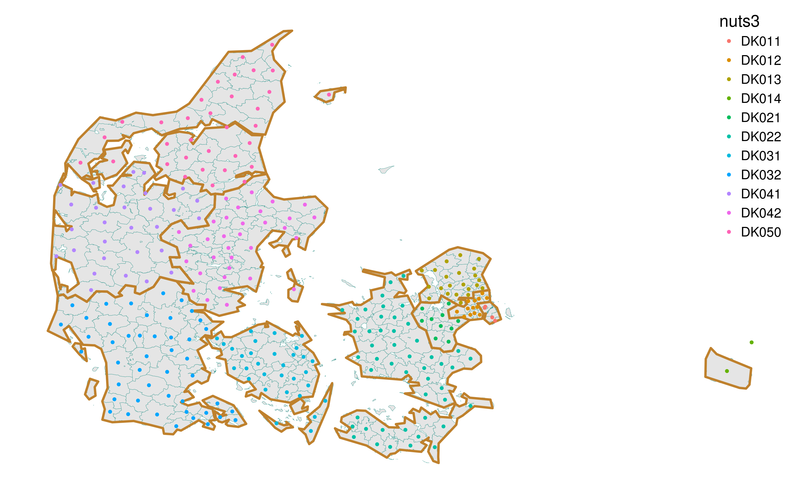
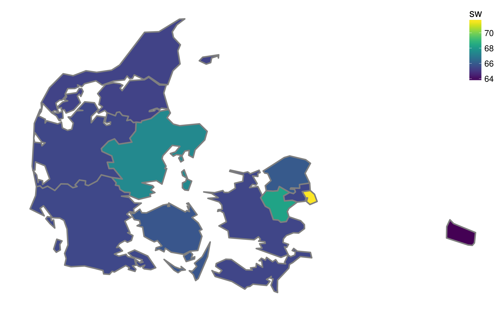

# set locale and encoding parameters to read Danish
if(Sys.info()['sysname']=="Linux"){
Sys.setlocale("LC_CTYPE", "da_DK.utf8")
danish_ecnoding <- "WINDOWS-1252"
}else if(Sys.info()['sysname']=="Windows"){
Sys.setlocale("LC_CTYPE", "danish")
danish_ecnoding <- "Danish_Denmark.1252"
}
# load required packages (install first if needed)
library(tidyverse) # version: 1.0.0
library(ggthemes) # version: 3.3.0
library(rgdal) # version: 1.2-4
library(rgeos) # version: 0.3-21
library(RColorBrewer) # version: 1.1-2
mypal <- brewer.pal(11, "BrBG")
library(fuzzyjoin) # version: 0.1.2
library(viridis) # version: 0.3.4
# load Denmark pop structures for the old municipalities
df <- read_csv("https://ikashnitsky.github.io/share/1703-nuts2-denmark/BEF1A.csv.gz")
# create a directory for geodata
ifelse(!dir.exists("geodata"), dir.create("geodata"), "Directory already exists")
# download, unzip and read Danish NUTS-3 geodata (31KB)
url_nuts <- "https://ikashnitsky.github.io/share/1703-nuts2-denmark/denmark-nuts3-espg3044.tgz"
path_nuts <- "geodata/denmark-nuts3-espg3044.tgz"
ifelse(!file.exists(path_nuts), download.file(url_nuts, path_nuts, mode="wb"), 'file alredy exists')
# If there are problems downloading the data automatically, please download it manually from
# https://ikashnitsky.github.io/share/1703-nuts2-denmark/denmark-nuts3-espg3044.tgz
untar(tarfile = path_nuts, exdir = "geodata")
sp_nuts3 <- readOGR(dsn = "geodata/.", layer = "denmark-nuts3-espg3044")
gd_nuts3 <- fortify(sp_nuts3, region = "NUTS_ID") # to the ggplot format
# download, unzip and read Danish old municipal geodata (6.0MB)
url_mun <- "https://ikashnitsky.github.io/share/1703-nuts2-denmark/kommune2006win1252.tgz"
path_mun <- "geodata/kommune2006win1252.tgz"
ifelse(!file.exists(path_mun), download.file(url_mun, path_mun, mode="wb"), 'file alredy exists')
# If there are problems downloading the data automatically, please download it manually from
# https://ikashnitsky.github.io/share/1703-nuts2-denmark/kommune2006utf8.tgz
untar(tarfile = path_mun, exdir = "geodata")
sp_mun <- readOGR(dsn = "geodata/.", layer = "kommune2006win1252", encoding = danish_ecnoding)
gd_mun <- fortify(sp_mun)
# coordinates of the municipalities
mun_coord <- bind_cols(as.data.frame(coordinates(sp_mun)), sp_mun@data[,1:3]) %>%
transmute(long = V1, lat = V2, enhedid, objectid, name = navn)R, GIS, and fuzzyjoin to reconstruct demographic data for NUTS regions of Denmark
r
rspatial
denmark
nuts
Ilya Kashnitsky ![]()
NUTS stands for the Nomenclature of Territorial Units For Statistics. The history of NUTS dates back to the beginning of 1970s, when European countries developed unified standards for systems of administrative geography. It was not until the beginning of this century when such a system finally became widely used. There are three main hierarchical levels of NUTS, and the most commonly used for regional analysis is NUTS-2.
Figure 1. Illustration of the principle of NUTS hierarchical system
One of the objectives of NUTS was to provide more or less comparable administrative divisions for all countries of Europe. Nevertheless, in 2013, population figures for single NUTS-2 regions ranged from 28.5 thousands in Aland island (Finland) to almost 12 million in Ile-de-France (Paris and surroundings, France).
The broken time series
Quite arbitrary in its essence, territorial division tends to evolve. Changes in administrative boundaries can cause problems for regional analysis as they break the time series and therefore make it harder to analyze trends. Despite this inconvenience, the boundaries of regions actually change quite often based on the needs and interests of local or national governmenta. Eurostat tracks all modifications providing detailed explanations of all the changes that happen between versions of NUTS (figure 2).
Figure 2. Changes in NUTS between versions 2006 and 2010
Despite this, Eurostat does not recalculate historic demographic data to match the most recent NUTS version. This means that, for the most recent version of NUTS, there is missing data for all years before the latest administrative change. So researchers have to reconstruct historical data manually to obtain a long time series. Of course, crude assumptions often have to be accepted in order to approximate the population figures for the current regions that did not exist in the past.
To make thing even more complex, Eurostat provides the data only for the latest version of NUTS (at least, I did not work out how to download previous versions). In my PhD project I carry out regional analysis for the NUTS-2 regions of European Union. To have the longest possible time series, when I did the data preparation in 2015, I chose the 2010 version of NUTS, on which the regional demographic projection EUROPOP2013 is based. For reproducibility, I uploaded the precise versions of the Eurostat data at NUTS-2 level on population age structures and deaths, as downloaded in 2015, to figshare.
Denmark
Some countries had to perform major changes in their systems of territorial division to fit the NUTS standards. The most significant reform happened in Denmark in 2007, where the former 271 municipalities were transformed into the new 98 municipalities. At the same time, NUTS was introduced, so that 98 municipalities were allocated to 11 NUTS-3 regions, which aggregate to 5 NUTS-2 regions. Typically, for a small country, there is only one NUTS-1 region in Denmark, which is the whole country.
As far as I know, there was no official attempt of Eurostat to reconstruct the time series for Denmark before 2007. The typical map of Eurostat for the pre-2007 period shows Denmark as “no data available” country (figure 3).
Figure 3. Life expectancy at birth in European NUTS-2 regions, 2006; a screenshot from the Eurostat’s interactive data exploratory tool
Such a data loss is somewhat surprising for a country such as Denmark. It might be quite difficult to match the old and new municipal systems; but it should be relatively easy to re-aggregate the old municipalities into the new (higher level) NUTS regions. That is precisely what I did during my data preparation1 and what I now want to share in this post.
1 I have spent quite some time searching if someone else did the job before me and failed to find.
The task is basically to identify which of the old 271 municipalities are located within the modern 11 NUTS-3 regions and to aggregate the municipal data. Then, NUTS-3 data is easily aggregated for the NUTS-2 level. Such a task could have meant working late into the night, but luckily we live in the GIS era. I used GIS to match the old municipalities with the NUTS-3 regions. Here I want to show (with code) how the task can be performed using the amazing and opensource R. Below I show the process of matching old municipalities to the NUTS regions and the process that I used to aggregate population data.
Data
The data on the population age structures for the old 271 municipalities of Denmark was downloaded from the official website of Statistics Denmark. The system only allows you to grab up to 10K cells for unregistered users and up to 100K for registered users. So the process of downloading the data involves some tedious manual manipulations. For the purpose of my phd project, I downloaded the data for the period 2001-2006; but, if needed, the data is available since 1979. The data, downloaded in 2015 and ‘tidied up’ can be found here.
I have spent a lot of time trying to find geodata with the boundaries of the old municipalities. Now, coming back to the topic more than 1.5 year later, I failed to identify the original source of the shapefile, though I am pretty sure that it came from here 2. The copy of the shapefile that I used can be found here.
2 There is a note on the website saying that, due to a planned change in the structure of the website, there might be some problems with data accuisition. I failed to download the geodata on 2017-02-23.
Finally, we need a shapefile of NUTS-3 regions. It can be easily downloaded from Eurostat geodata repository. The shapefile that I used is “NUTS_2010_20M_SH.zip”. The selection of the 11 Danish regions can be found here.
The projection used for both shapefiles is ESPG-3044, the one often used to map Denmark.
Now, the code to prepare the R session and load the data.
Spatial matching
Let’s first have a look at the map.
ggplot()+
geom_polygon(data = gd_nuts3, aes(long, lat, group = group),
color = brbg[3], fill = "grey90", size = 1)+
geom_point(data = mun_coord, aes(long, lat),
color = brbg[10], size = 1)+
theme_map()Figure 4. Reference map of the old municipalities and NUTS-3 regions of Denmark
We can easily see that the boundaries of the municipalities (light blue) are much more precise than that of the NUTS-3 regions (orange/brown). This is not a problem as long as all the centroids of the municipalities fall within the boundaries of the NUTS-3 regions, which seems to be true for all municipalities except for the easternmost one. A quick check reveals that this is Christiansø, a tiny fortified island, whose history goes back to the Middle Ages. It has a special status and is not included into the NUTS system. For further manipulations, Christiansø can safely merge it with the close-by Bornholm.
To identify which municipalities fall into which NUTS regions, I use the spatial overlap function (over) from sp package. Here I should thank Roger Bivand, a person who made it possible to do any spatial analysis in R.
# municipality coordinates to Spatial
mun_centr <- SpatialPoints(coordinates(sp_mun), proj4string = CRS(proj4string(sp_nuts3)))
# spatial intersection with sp::over
inter <- bind_cols(mun_coord, over(mun_centr, sp_nuts3[,"NUTS_ID"])) %>%
transmute(long, lat, objectid,
nuts3 = as.character(NUTS_ID),
nuts2 = substr(nuts3, 1, 4))Let’s again check visually if the spatial matching worked okay.
ggplot()+
geom_polygon(data = gd_mun, aes(long, lat, group = group),
color = brbg[9], fill = "grey90", size = .1)+
geom_polygon(data = gd_nuts3, aes(long, lat, group = group),
color = brbg[3], fill = NA, size = 1)+
geom_point(data = inter, aes(long, lat, color = nuts3), size = 1)+
geom_point(data = inter[is.na(inter$nuts3),],
aes(long, lat), color = "red", size = 7, pch = 1)+
theme_map(base_size = 15)+
theme(legend.position = c(1, 1),
legend.justification = c(1, 1))Figure 5. Checking the spatial intersection between the old municipalities and NUTS-3 regions of Denmark
Not bad. But there is an “NA” category that represents all the cases where the spatial match failed. How many such cases do we have?
## [1] 3# where the intersection failed
inter[is.na(inter$nuts3),]## long lat objectid nuts3 nuts2
## 23 892474.0 6147918 46399 <NA> <NA>
## 65 504188.4 6269329 105319 <NA> <NA>
## 195 533446.8 6312770 47071 <NA> <NA>As there are only 3 cases, I decided to fix them manually.
The final visual check.
ggplot()+
geom_polygon(data = gd_mun, aes(long, lat, group = group),
color = brbg[9], fill = "grey90", size = .1)+
geom_polygon(data = gd_nuts3, aes(long, lat, group = group),
color = brbg[3], fill = NA, size = 1)+
geom_point(data = fixed, aes(long, lat, color = nuts3), size = 1)+
theme_map(base_size = 15)+
theme(legend.position = c(1, 1),
legend.justification = c(1, 1))Figure 6. Re-checking the spatial intersection between the old municipalities and NUTS-3 regions of Denmark
Now everything seems okay.
Joining spatial and statistical data (fuzzy join)
The next task is to join the spatial data and statistical data together. The spatial layer for municipalities does not contain the codes that are used by Statistics Denmark, so I have to match municipalities in the two datasets by their names. This is quite a difficult task. Names can be written slightly differently, there are some special characters in Danish alphabet, and some municipalities may have experienced a change of name. To solve the task most efficiently, I used the ‘Fuzzy String Matching’ approach which is implemented in the fuzzyjoin package by David Robinson.
First, I simplify the names in both datasets turning them into lowercase, replacing the character “å” with “aa”, and removing the “Kommune” word in the spatial dataset names. Please note that I downloaded (separately) a small selection from Statistics Denmark to have a lightweight dataframe with municipal codes and names.
# simplify municipalities names
mun_geo <- mun_coord %>%
transmute(name = sub(x = name, " Kommune", replacement = ""), objectid) %>%
mutate(name = gsub(x = tolower(name), "å", "aa"))
mun_stat <- read.csv2("https://ikashnitsky.github.io/share/1703-nuts2-denmark/stat-codes-names.csv",
fileEncoding = danish_ecnoding) %>%
select(name) %>%
separate(name, into = c("code", "name"), sep = " ", extra = "merge") %>%
mutate(name = gsub("\\s*\\([^\\)]+\\)", "", x = name)) %>%
mutate(name = gsub(x = tolower(name), "å", "aa"))Let’s try fuzzy join.
# first attempt
fuz_joined_1 <- regex_left_join(mun_geo, mun_stat, by = "name")The resulting dataframe has 278 rows instead of 271. That means that for some municipalities in the spatial dataset there was more than one match. Let’s identify them.
## Source: local data frame [14 x 5]
## Groups: objectid [7]
##
## name.x objectid code name.y n
## <chr> <dbl> <chr> <chr> <int>
## 1 haslev 105112 313 haslev 2
## 2 haslev 105112 403 hasle 2
## 3 brønderslev 47003 739 rønde 2
## 4 brønderslev 47003 805 brønderslev 2
## 5 hirtshals 47037 817 hals 2
## 6 hirtshals 47037 819 hirtshals 2
## 7 rønnede 46378 385 rønnede 2
## 8 rønnede 46378 407 rønne 2
## 9 hvidebæk 46268 317 hvidebæk 2
## 10 hvidebæk 46268 681 videbæk 2
## 11 ryslinge 46463 477 ryslinge 2
## 12 ryslinge 46463 737 ry 2
## 13 aarslev 46494 497 aarslev 2
## 14 aarslev 46494 861 aars 2So, for 7 municipalities, two matches were found. I will drop the imperfect match variants in the next iteration of fuzzy join.
The other issue is the municipalities for which no match was found in that statistical data.
## name.x objectid code name.y
## 1 faxe 105120 <NA> <NA>
## 2 nykøbing falsters 46349 <NA> <NA>
## 3 herstederne 46101 <NA> <NA>As there are only three such cases, I corrected them manually in the spatial data to match the statistical data. There are two cases of a difference in the way the name of municipality are written and one case of name change.
# correct the 3 non-matching geo names
mun_geo_cor <- mun_geo
mun_geo_cor[mun_geo_cor$name=="faxe", "name"] <- "fakse"
mun_geo_cor[mun_geo_cor$name=="nykøbing falsters", "name"] <- "nykøbing f."
mun_geo_cor[mun_geo_cor$name=="herstederne", "name"] <- "albertslund"Now the second attempt to match the datasets (spatial dataset is corrected).
# second attempt
fuz_joined_2 <- regex_left_join(mun_geo_cor, mun_stat, by = "name")
# drop non-perfect match
fuz_joined_2 <- fuz_joined_2 %>%
group_by(objectid) %>%
mutate(n = n()) %>%
ungroup() %>%
filter(n < 2 | name.x==name.y)
fuz_joined_2 <- fuz_joined_2 %>% transmute(name = name.x, objectid, code)The output looks perfect. Now, the last step – using the matched “objectid” field, I will finally attach the NUTS data to statistical codes.
# finally, attach the NUTS info to matched table
key <- left_join(fuz_joined_2, fixed, "objectid")Aggregate old municipal data to NUTS levels
The previous manipulations yielded a dataframe that links statistical codes of the old municipalities with the corresponding NUTS regions. The last thing that has to be done is aggregation. I will attach the “key” dataset to a statistical dataset and aggregate the data at NUTS-3 and NUTS-2 levels.
# finally, we only need to aggregate the old stat data
df_agr <- left_join(key, df, "code") %>%
filter(!is.na(name)) %>%
gather("year", "value", y2001:y2006)
df_nuts3 <- df_agr %>%
group_by(year, sex, age, nuts3) %>%
summarise(value = sum(value)) %>%
ungroup()
df_nuts2 <- df_agr %>%
group_by(year, sex, age, nuts2) %>%
summarise(value = sum(value)) %>%
ungroup()Let’s now calculate the shares of working age population in Danish NUTS-3 regions in 2001 and map the information.
# total population in 2001 by NUTS-3 regions
tot_01 <- df_nuts3 %>%
filter(year=="y2001") %>%
group_by(nuts3) %>%
summarise(tot = sum(value, na.rm = TRUE)) %>%
ungroup()
# working-age population in 2001 by NUTS-3 regions
working_01 <- df_nuts3 %>%
filter(year=="y2001", age %in% paste0("a0", 15:64)) %>%
group_by(nuts3) %>%
summarise(work = sum(value, na.rm = TRUE)) %>%
ungroup()
# calculate the shares of working age population
sw_01 <- left_join(working_01, tot_01, "nuts3") %>%
mutate(sw = work / tot * 100)# map the shares of working age population in 2001 by NUTS-3 regions
ggplot()+
geom_polygon(data = gd_nuts3 %>% left_join(sw_01, c("id" = "nuts3")),
aes(long, lat, group = group, fill = sw),
color = "grey50", size = 1) +
scale_fill_viridis()+
theme_map(base_size = 15)+
theme(legend.position = c(1, 1),
legend.justification = c(1, 1))Figure 7. The share of working age (15-64) population by NUTS-3 regions of Denmark in 2001
The result (thankfully!) looks realistic, with higher shares of the working-age population in the capital region, and in other regions that have relatively big cities.